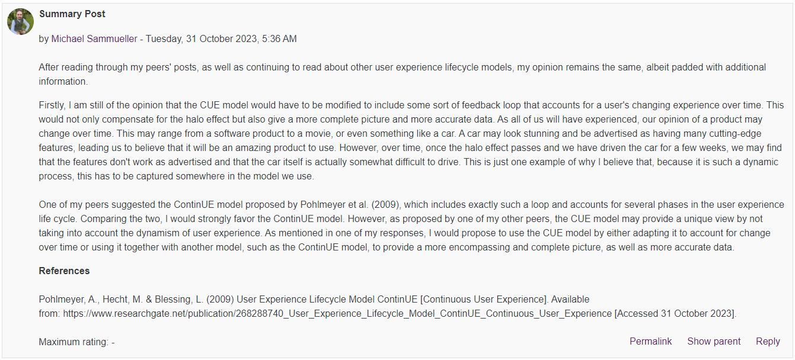

Unit 8: Artefacts
Discussion Forum 2
Part of this units e-portfolio tasks was to write a summary post in the second discussion forum, based on what we have learned since the initial post and peer responses.
e-Portfolio Activity: Data Structures Reflection
Task:
- Select at least two different data structures to hold the data associated with the list of functional and non-functional requirements that you defined for Task 1.
- Justify your data structure choices.
- Select at least one academic paper, which might be similar to the work of Abeykoon et al. (2020).
- Use your sourced information to support your data structure choices.
Firstly, I want to clarify that I am unsure what "Task 1" refers to in the list of tasks. My responses therefore are based on the Unit 7 e-portfolio task. THe two data structures I have selected are hashmaps and linked lists. Without having selected any academic paper, my data structure choices are based on information released by Google, as well as some educated guesses as to what data structures YouTube may use for its video storage and retrieval system.
Hash Maps are a data structure built on top of an array, which allow for efficient retrieval of information (CodeCademy, N.D.). Hash Maps are much more efficient than other data structures, such as trees. Hash Maps (or Hash Tables) allow for a constant time lookup, i.e. "O(1)" (LibreTexts Engineering, N.D.). In comparison, to search a tree structure, it would take "O(log(n))" time (GeeksforGeeks, 2023).
Based on the retrieval speed alone, it would make the most sense to use a Hash Map or Hash Table to store data that needs to be retrieved quicklyi, regardless of input size. As Hash Maps operate in constant time, they are the better choice. This can be improved even further by using CPython, as proposed in a study done by Bazilio et al. (2023). CPython combines random and linear probing in order to avoid a problem called "collision", in which two values hash to the same location.
References
CodeCademy (N.D.) Learn Hash Maps. Available from: https://www.codecademy.com/learn/complex-data-structures/modules/cspath-hash-maps/cheatsheet [Accessed 31 October 2023].
LibreTexts Engineering (N.D.) 7.1: Time complexity and common uses of hash tables. Available from: https://eng.libretexts.org/Courses/Folsom_Lake_College/CISP_430%3A_Data_Structures_(Aljuboori)/07%3A_Hash_Tables/7.01%3A_Time_complexity_and_common_uses_of_hash_tables [Accessed 31 October 2023].